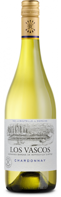
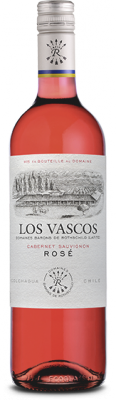
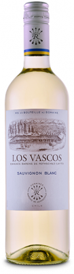

LOS VASCOS
“Being pioneers in Chile was an exciting challenge
and we have chosen a superb location.”
Baron Eric de Rothschild
The wines
-

Los Vascos Chardonnay
Los Vascos Chardonnay
A wine for every day, for a dinner with friends, or a glass in front of the fire, the Collection's Bordeaux Rouge is a well-balanced blend of traditional grape varieties consisting of Cabernet Sauvignon and Merlot.
-

Los Vascos Blanc
Los Vascos Blanc
A wine for every day, for a dinner with friends, or a glass in front of the fire, the Collection's Bordeaux Rouge is a well-balanced blend of traditional grape varieties consisting of Cabernet Sauvignon and Merlot.
-

Los Vascos Rose
Los Vascos Rose
A wine for every day, for a dinner with friends, or a glass in front of the fire, the Collection's Bordeaux Rouge is a well-balanced blend of traditional grape varieties consisting of Cabernet Sauvignon and Merlot.
History
Grape vines were planted in the north of Chile in the 16th century,
in the wake of the Spanish conquistadors. Production expanded rapidly and the country was soon exporting to Peru, challenging imported wines from Spain. The Echenique family, of Basque origin, planted vineyards in the Peralillo area of the Colchagua province around 1750 and in the 19th century, the same family was part of the rapid expansion that took place in Chilean wines, at the initiative of a handful of pioneers who were inspired by the French model. The first French grapes were planted in the Cañeten Valley of Colchagua in 1850 but when phylloxera ravaged Europe’s vineyards, Chile’s production increased dramatically. Vineyards went from 9,000 hectares in 1870 to 40,000 hectares in 1900. The first exports of wines to Europe took place in 1877. production in the Cañeten Valley of the Peralillo region was reorganised and rationalised. Plots of land were cleared and prepared for planting, water supply and storage systems were put in place and cellars equipped with cement tanks were built. The “Cañetenes” wines gradually built up a good reputation. However, the land reform measures which came into force in the late 60s and early 70s put a stop to any further expansion.The new era has seen some very substantial investments
under the supervision of Château Lafite Rothschild’s Technical Director. The existing vineyard has been restructured, a programme for new planting drawn up and yields have been intentionally reduced. Water resources have been secured with boreholes and a weather station has been set up in the vineyard. The bodega has been enlarged and modernized in several stages in order to meet the new requirements in terms of vinification and maturing (stainless steel vat room, pneumatic presses, barrel room). And finally, a guest house has been built in the traditional Chilean style, enabling the estate to offer visitors a warm welcome. that Los Vascos possessed the potential to produce fine wines has been confirmed. Los Vascos can be more confident than ever about the strength of its terroirs. However, the pioneering spirit continues, and the pursuit of excellence requires passion and time. New high potential plots have been identified in the foothill regions: the technical team is already paving the way for the Grands Vins of tomorrow with new planting projects to meet demand.For the wines, a period of transition followed,
the grapes from the young vines abounded with adolescent vigour and during the early 2000s this wild “force of nature” had to be tamed in the winemaking process. Gradually the young Cabernet Sauvignon vines settled down as they matured and techniques evolved as our understanding of the terroir increased. In parallel, a detailed analysis of the terroirs with older vines enabled their potential to be identified and the Grand Vins to be developed: the Grande Reserve and, from 1999, LE DIX. The range also expanded with a Sauvignon Blanc selected from wines produced in the Casablanca Valley, a Chardonnay and a Rosé, and then the Los Vascos Carmenere Grande Reserve.